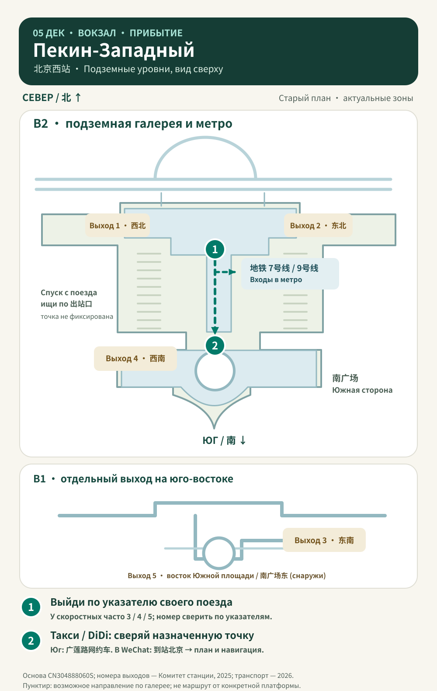
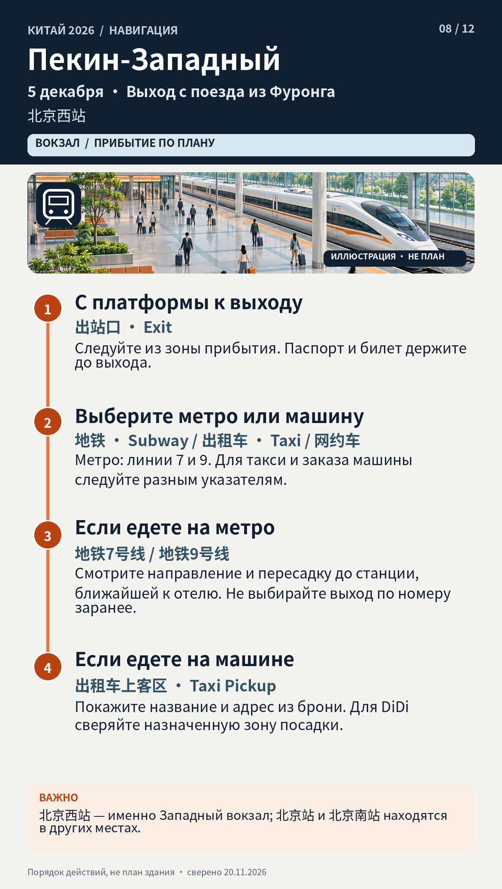
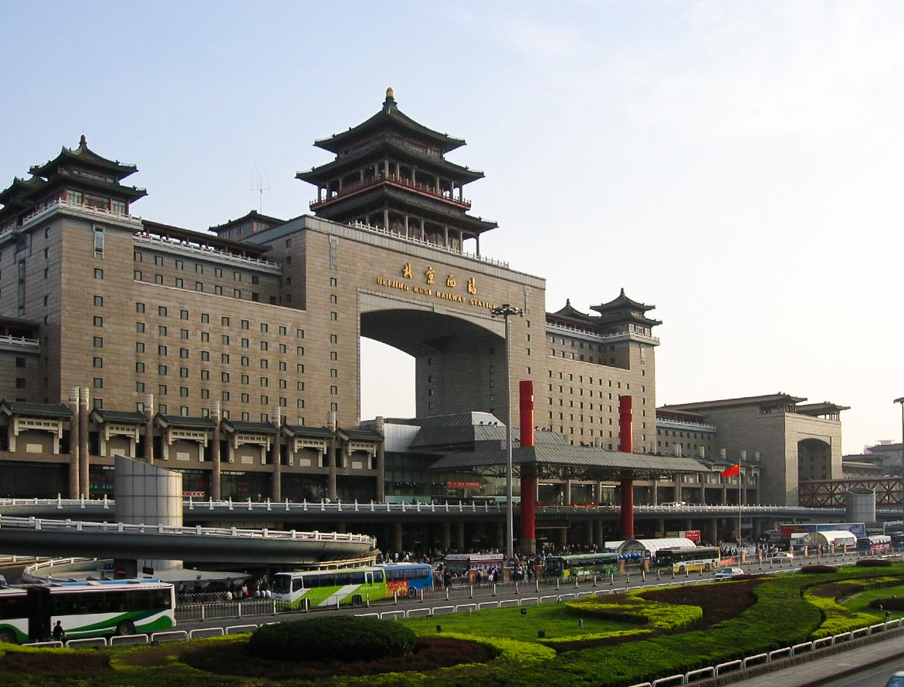

5 декабря. Приезд и спокойный вечер
5 декабря · Пекин-Западный: прибытие
План здания сверху

Открыть план крупно · Сохранить PNG · Масштабируемый SVG · Справочник вокзала · Внутренняя навигация и AR
Где нет подтверждённого плана: Выход с платформы и точку посадки сверяйте по навигации вокзала. Внутренняя навигация и AR.
Ниже: прежняя памятка по шагам. Это не план здания.
Выход с Beijing West к метро или согласованной зоне посадки в такси.

Это схемы порядка действий с иллюстрациями, а не точные планы зданий. Номера выходов, платформы, терминалы и время сверяйте с выписанным билетом, табло и сотрудниками. Указанное на картинках расписание — план, а не подтверждение рейса или поезда.
Пекин-Запад → отель у Liyuan → ужин и продукты

- Время дня
- 18:03 — 21:20
- Расходы на двоих
- 510 ¥ ≈ 6 120 ₽Без покупок и общего резерва
- Сувениры отдельно
- Не запланированы
- 118:03Пекин-Запад
- 219:45Отель
- 320:00Ужин
- 420:40Продукты
После почти 10 часов в поезде — без поездки в центр. При задержке убрать прогулку, оставить еду и сон.
Нажмите этап, чтобы раскрыть подробности. Время — план с запасами, цены на двоих. Рубли: 12 ₽/¥, плановый курс.
18:03–18:2522 минR · выйти на Пекин-Запад0 ¥
北京西站 / Beijing West. Время 18:03 совпадает с найденным текущим расписанием, но билет на 5 декабря имеет приоритет. Следовать знакам Taxi / 出租车 или точке посадки DiDi, не соглашаться на предложения зазывал.
18:25–19:45план 80 минR → H · такси до Qiuguo XПлан 180 ¥ / машина
Около 32 км по дорожному расчёту; 60–100 минут с учётом движения и ожидания. После почти десяти часов в поезде выбираю машину. Показать полное название отеля, а не только слово Qiuguo: похожих филиалов много.
19:45–20:0015 минH · заселиться и подтвердить утроУже оплачено
Отель и завтрак оплачены. Узнать часы завтрака, выход к метро и режим супермаркета B1. Попросить помочь с билетами/карточками мест, не отдавая никому пароль от аккаунта.
20:00–20:4040 минN · тёплый ужин рядом120 ¥ / 2
李先生牛肉面大王(北京通州梨园店), 云景东路5-2号: говяжья лапша 牛肉面 или рис с мясом, одна овощная закуска. От комплекса ориентировочно 5–10 минут пешком; точную дверь проверить по вывеске. Если филиал закрыт — открытая лапшичная на той же улице; запасной знакомый вариант KFC в Guiyou.
20:40–21:2040 минS → L → H · продукты и короткий круг70 ¥ / 2; к 21:20 в отеле
物美 / Wumart в B1 贵友大厦: вода, фрукты, орехи, салфетки и перекус на следующий день. Потом пройтись до входа метро Liyuan, запомнить путь назад. Всего около 0,5–1 км, без выезда к каналу. Если поезд задержится — сначала магазин, затем ужин, прогулку убрать.
08:04–18:03 · чем заняться в поезде
08:04–09:15~1 ч 10 минУ окна: холмы западной ХунаниПоезд оплачен
Фуронг → Jishou East → Fenghuang Gucheng → Huaihua South. Чередуются холмы, деревни, виадуки и туннели. Старые города находятся не у платформ: вид на Фэнхуан из вагона не обещаю. Завтрак, купленный в Фуронге, уже учтён там.
09:15–12:00~2 ч 45 минК Чанше: отдых и фотографииБез доплаты
После Хуайхуа пейзаж постепенно становится более открытым. Выбрать фотографии прошедших дней, скачать карты и очередную серию/фильм заранее. В поезде номер может отображаться как G3650 — это не само по себе требование пересадки.
12:00–14:00~2 часаОбед, Ухань и движение на север140 ¥ / 2: обед + доп. перекусы
Около полудня — район Уханя по текущему расписанию. После станции путь пересекает Янцзы; поймать реку можно с обеих сторон, но здания могут закрываться конструкциями моста. Обед — вагонное питание по фактическому меню или заранее упакованная еда. Не выходить на коротких остановках.
14:00–18:03~4 часаРавнины, Чжэнчжоу, ШицзячжуанПоезд оплачен
Во второй половине — поля и города; к концу пути уже темно. Фильм, сон, сортировка фото, карточная игра без шума. Раз в час ненадолго пройтись, когда безопасно. За 30 минут до прибытия: туалет, вещи, интернет и адрес отеля.
Вечер у отеля · крупно
H и S — один торговый комплекс: отель и супермаркет B1. N — примерный квартал адреса кафе, не точная дверь. По тротуарам 0,5–1 км; при задержке прогулку убрать.
- HОтель Qiuguo X秋果X酒店
- SПродукты Wumart, B1物美 · 贵友大厦 B1
- NЛапша Li Xiansheng李先生牛肉面 · 云景东路5-2号
- LМетро Liyuan梨园
Пекин-Запад → отель
Такси 60–100 минут с учётом дорожной ситуации. Альтернатива: метро 9 → Military Museum → 1/Батун → Liyuan, 85–105 минут, лимит 16 ¥ / 2.
- RВокзал Пекин-Запад北京西站
- HОтель Qiuguo X秋果X酒店
Ужин и продукты в одном квартале
20:00 · 李先生牛肉面, 云景东路5-2号: лапша с говядиной или рис и овощная закуска. План 120 ¥ на двоих; точный вход проверить по вывеске.
20:40 · 物美 / Wumart, B1 贵友大厦: вода, фрукты, орехи и салфетки. План 70 ¥. Проверить часы у ресепшена; при задержке сначала магазин.
Архивные фотографии помогают представить места и блюда, но не подтверждают декабрьский вид, меню или ассортимент.